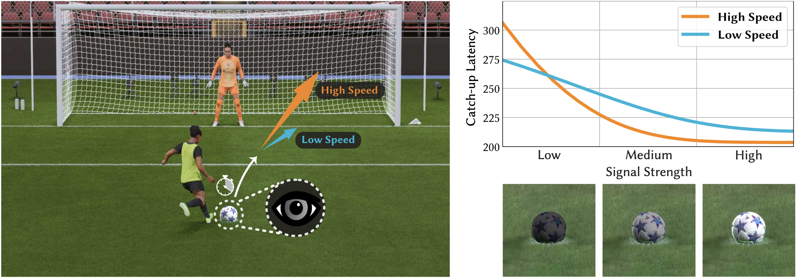

Performance Analysis of Catch-Up Eye Movements in Visual Tracking
1New York University
ACM SIGGRAPH Asia 2025

Catch-up eye movement performance is influenced by visual features. Left: A soccer gaming scenario where the gatekeeper player must accuratelyfollow the sudden motion of a kicked ball to take action. This process requires the player to visually estimate the change of the ball's motion pattern andadjust the eye movement accordingly to catch up. Depending on game designs and difficulties, the ball may appear differently on screen (varying visual signalstrength) or move at different speeds. Right: Our prediction of user catch-up latency influenced by visual signal strengths and ball motion speeds.
Abstract
In graphics applications featuring dynamically moving visual targets -- such as film and gaming -- we have to rotate our eyes to follow objects as they move across the screen. Because target motion is often unpredictable and ever-changing, we must rapidly respond to motion cues and adjust eye movements to maintain the target within the fovea, a process known as catch-up. This catch-up behavior reflects how efficiently the eyes react to and compensate for sudden changes in motion, making it a critical indicator for both task performance and the overall visual experience. In this work, we study and measure the eye catch-up performance during visual tracking. In particular, we present a behavioral analysis that predicts users' reaction latency to abrupt target motion based on target visibility. Our numerical analysis and human subject studies evidence the effectiveness and generalizability. We further show how the catch-up metric can be applied to evaluate video quality, adjust game difficulty, and optimize display configurations for enhanced user performance. We envision this research to create a computational link between human perception and behavioral performance in dynamic graphics contexts.
Paper and Supplementary Materials
@inproceedings{kang2025performance,
title={Performance Analysis of Catch-Up Eye Movements in Visual Tracking},
author={Kang, Jenna and Duinkharjav, Budmonde and Williams, Niall L. and Sun, Qi},
booktitle={SIGGRAPH Asia 2024 Conference Papers},
pages={1--14},
year={2025}
}